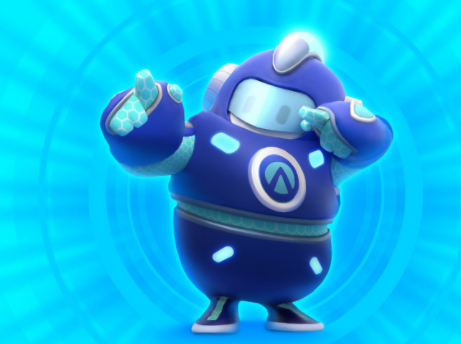

Epic Games compra enorme complejo comercial para fundar su nueva sede. Las oficinas centrales de la compañía estarán listas para 2024
El ascenso de Epic Games da cuenta de sus éxitos en el desarrollo de juegos,
software y herramientas creativas alcanzando resultados impresionantes como lo sucedido con Unreal Engine,
motor que se ha convertido en un estándar en la industria de los videojuegos. Esto significa que,
como compañía, ha crecido mucho y y cuenta con el capital suficiente para poner en marcha los más ambiciosos
proyectos y uno de ellos es la fundación de una nueva sede.
LAS NOTICIAS MÁS COMENTADAS
Primera Noticia
Segunda Noticia
¿El creador de Shadow of the Colossus mostrará su nuevo juego en 2021? Fumito Ueda prepara su próxima obra luego de The Last Guardian
A Fumito Ueda le han bastado 3 juegos para hacerse con un nombre en la industria y para haber formado una legión de fans que esperan con ansias su próximo juego. La trayectoria creativa iniciada por ICO, continuada por Shadow of the Colossus y perpetuada por The Last Guardian.
A Fumito Ueda le han bastado 3 juegos para hacerse con un nombre en la industria y para haber formado una legión de fans que esperan con ansias su próximo juego. La trayectoria creativa iniciada por ICO, continuada por Shadow of the Colossus y perpetuada por The Last Guardian.
Tercera Noticia
Descubren el secreto final de NieR: Automata; te deja saltarte casi todo el juego
El truco se descubrió gracias cientos de horas de ingeniera inversa.
A poco más de un año del lanzamiento de NieR: Automata, Yoko Taro y otros creativos del juego, aseguraron que aún había un secreto sin resolver en este título. Ahora, a poco de 4 años del lanzamiento original de NieR: Automata, se descubrió este último secreto. Se trata de un truco que te deja saltarte casi todo el juego.
A poco más de un año del lanzamiento de NieR: Automata, Yoko Taro y otros creativos del juego, aseguraron que aún había un secreto sin resolver en este título. Ahora, a poco de 4 años del lanzamiento original de NieR: Automata, se descubrió este último secreto. Se trata de un truco que te deja saltarte casi todo el juego.
Cuarta Noticia
God of War: Fallen God, el nuevo cómic de la franquicia, ya tiene fecha. La publicación será una precuela del más reciente título para PlayStation 4.
Los fans de God of War están emocionados, pues Santa Monica ya trabaja en una nueva entrega de la franquicia para PlayStation 5. El título está programado para debutar este año, pero todavía no tiene fecha de lanzamiento.
Los fans de God of War están emocionados, pues Santa Monica ya trabaja en una nueva entrega de la franquicia para PlayStation 5. El título está programado para debutar este año, pero todavía no tiene fecha de lanzamiento.
Proximos lanzamientos
DA CLICK EN EL TITULO PARA SABER MAS..
|
Fall Guys  |
|
Dying Light 2 |
|
PC MODING |
|
Call of Duty Black Ops Cold War |
|
Rust |
|
Counter Strike Global Offensive |
|
Gotham Knights |